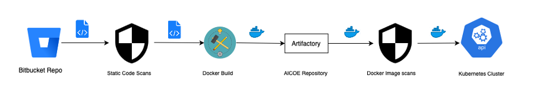

“Step by step code based deploymeny into production AKS serving millions of simultaneous users”
- toc: true
- branch: master
- badges: false
- comments: true
- categories: deployment
- image: images/deployment-journey-reinforcement-learning.png
- hide: false
- search_exclude: false
Introduction
Our team is working to improve the health and wealth of millions of current customers and acquire more customers in the future. One of the most effective and efficient way to achieve our goal is by getting an app into the millions of people. As it turns out, we already have a wonderful application which is downloaded by more than 3 million users as I write this post. The mobile application has a carousel portion in the bottom half section of the home page where dynamic banners can be rendered. Each banner is utilized as a form of information, communication medium or an application feature. This is the first page that is seen by all users who successfully register and a portion of them clicking on the banner displayed registering their interest. Our team’s goal is to increase engagement within the app. The first step was to understand the source of users who were clicking the banners, why are they willing to go into exploring app via banners after registering while others would go on to explore the app via other routes.
Problem statement
The goal was to increase user engagement within the app by understanding user’s interest in a variety of banners and then leverage the results across the app.
we didn’t have existing data about user interaction with the app neither did we have enough time at hand to perform that activity. We were also looking at an incoming huge inflow of new users expected in near future due to the planned marketing campaigns. We were essentially looking at a cold start problem to improve engagement since, we would know little about the new users and time to market was a very important factor. We were expected to go live within two weeks duration with a solution to make the best out of data available at hand.
Solution
Bayesian bandits with Thomson sampling ticked all boxes as follows: 1. It requires no data or less to start with compared to other options 2. It will learn incoming users/data and start recommending banners 3. Can work with new banners configured as new arms
The next phase of the project was also discussed where we agreed to work on building contextual bandits. In this post, I will be talking more about how we used various tools and technology making deployment possible. I will not be talking about how the recommendation algorithm works and the technology stack used to achieve it.
Deployment

The build and deployment part of the project was broken down into two technical stages/phases: 1. Testing model and documenting results in the pre-prod environment with production data, define the input and the output schema for the model which will be used by the data engineer team to create a streaming pipeline. 2. Setup model to consume a live stream of event data, and respond via a REST endpoint with the recommended list of banners for the users
The front end of the mobile app is configured for a response time of one second w.r.t to back-end. It meant that the app will try to generate dynamic banners on the user screen based on our recommendations or fall back to static banners if we failed to deliver a response within a second, which added another layer of complexity to the second stage. Our APIs were expected to support a wide range of user load starting from a few hundred requests to millions across the region.
We could list the deployment infra into three major components: 1. A robust build and deployment pipeline 2. Automated performance testing 3. Production monitoring and alerting
Lessons learned for next time:
- We started writing the pipeline code from scratch, whereas it would have helped save time if an advanced hello world type of empty pipeline existed, which could be used as a template structure. It would have enabled us to know what credentials and access were required at what stage.
- There were many credentials and access that were required to get the pipeline up and running. It would be a time and effort savior if we have one master service id created and assigned to a pipeline which can then be used across all tools in the organization.
- It is very difficult to build a machine learning model, and real-time streaming data was an additional complexity, but productionizing that model with streaming data is many folds difficult.
Contributors
Glenn Bayne, Tien Nguyet Long, John Yue, Zeldon Tay （郑育忠), Steven Chau , Denys Pang , Philipp Gschoepf , Syam Bandi , Uma Maheshwari, Michael Natusch